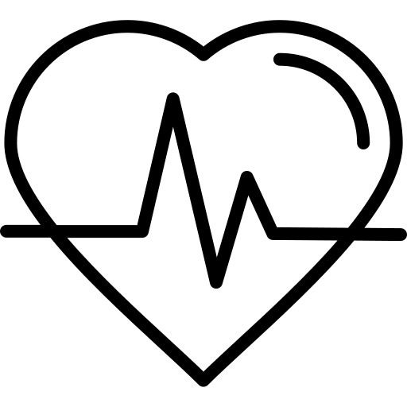

<!--<!DOCTYPE html>
<html lang="pt-br">
<head>
    <meta charset="UTF-8">
    <meta name="viewport" content="width=device-width, initial-scale=1.0">
    <title>Contato - Inovare Nutição</title>
    <link rel="shortcut icon" href="imagens/five-icon.jpg" type="image/x-icon">
    <link rel="stylesheet" href="css/estilo.css">
</head>
<body>

    <header class="cabecalho">
        <a href="index.html"></a>
    </header>
     
    <nav class="menu">
        <a href="index.html">Início</a>
        <a href="sobrenos.html">Sobre Nós</a>
        <a href="produtos.html">Produtos</a>
        <a href="loja.html">Nossas Lojas</a>
        <a href="contato.html">Contato</a>
    </nav>
    
        
    
        <div class="container">
            
        
            <p>Olá, somos a <br> <strong style="color: #8eba1c; font-family: cursive; font-size: 30px;">Inova Nutrição</strong> <br><br>
            Somos uma clínica de nutrição especializada em oferecer consultas personalizadas com nutricionistas experientes. <br><br>
            Nossa equipe é composta por profissionais altamente treinados que trabalham em estreita colaboração para garantir que cada paciente receba o cuidado e orientação nutricional de que precisa. Acreditamos que a nutrição é a base para a saúde e bem-estar e estamos comprometidos em ajudar nossos pacientes a alcançar seus objetivos de saúde. <br><br>
        
            Oferecemos uma variedade de programas e serviços, incluindo consultas individuais, avaliações nutricionais, orientações para doenças crônicas e programas de perda de peso. Nós trabalhamos com nossos pacientes para desenvolver planos de tratamento personalizados que são seguros, eficazes e sustentáveis. <br><br>
        
            Entre em contato conosco hoje para marcar uma consulta e começar sua jornada para uma vida mais saudável. <br><br>
        </div> <br><br>

    <main class="cards">
        <h1>por que ter acompanhamento nutricional?</h1>
        <section class="card">
            
            <h3>Alcançar objetivos específicos</h3>
            <span>Um acompanhamento nutricional personalizado pode ajudar a alcançar objetivos de saúde específicos, como perda de peso, ganho de massa muscular, melhora da saúde do coração e gerenciamento de doenças crônicas.</span>
        </section>

        <section class="card">
            
            <h3>Melhoria da qualidade de vida</h3>
            <span>Um acompanhamento nutricional pode ajudar a identificar e corrigir problemas nutricionais que possam estar afetando sua saúde e bem-estar e proporcionar uma vida mais saudável e com mais energia.</span>
        </section>

        <section class="card">
            
            <h3>Aprender sobre nutrição</h3>
            <span>Aprender sobre nutrição de forma precisa e personalizada. Um nutricionista pode esclarecer dúvidas sobre os nutrientes que precisamos, como escolher alimentos saudáveis e criar hábitos alimentares saudáveis.</span>
        </section>
    </main>


    <footer>
        
        <p>Desenvolvido por JMG &copy;</p>  
    
    </footer>
</body>
</html>-->